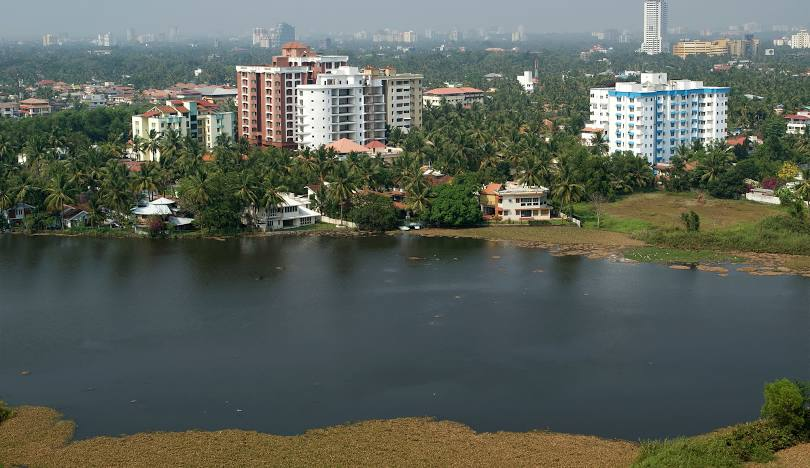
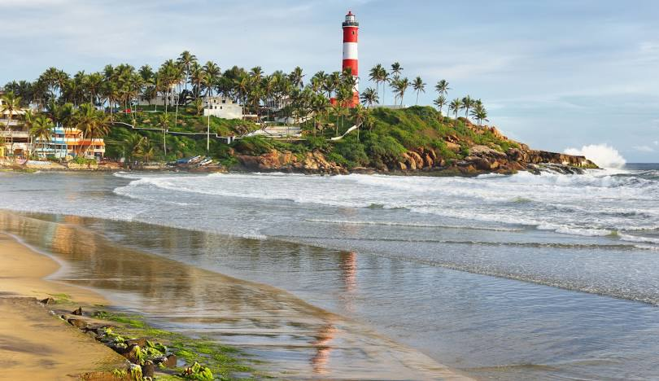
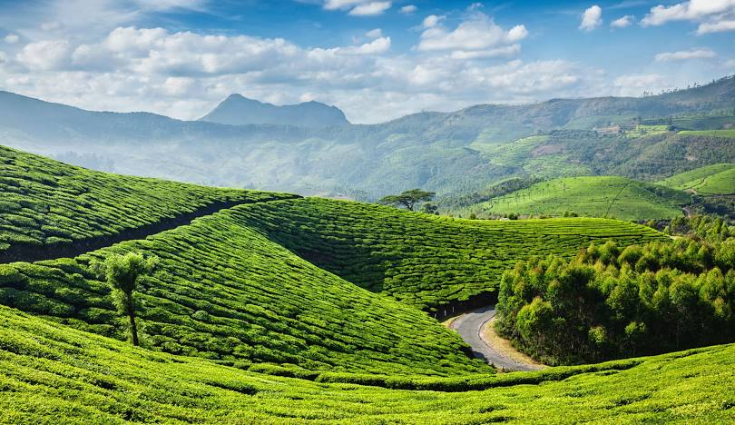
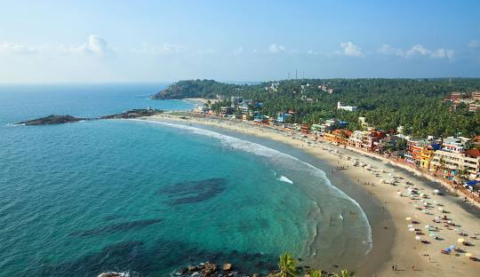

|  Kochi (also known as Cochin) is a popular tourist destination in Kerala, India, primarily due to its rich history, cultural attractions, and natural beauty. Visitors are drawn to the city's colonial-era architecture, diverse religious sites, and the opportunity to experience the unique Kerala culture, including Kathakali performances and traditional handicrafts. |
 Kovalam, a world-famous beach destination, is cherished for its three crescent-shaped beaches and tranquil waters, perfect for sea bathing. The rocky headland here creates a serene bay, making it an enchanting spot for tourists. |
|  Munnar is a popular tourist destination in Kerala, India, due to its stunning natural beauty, including tea plantations, rolling hills, and misty valleys. It's also known for its pleasant climate, diverse wildlife, and various tourist attractions like Mattupetty Dam, Top Station, and Echo Point. |
 Thiruvananthapuram, also known as Trivandrum, is a popular tourist destination due to its diverse attractions, including historical sites, beautiful beaches, serene backwaters, and natural beauty. The city offers a mix of cultural experiences, historical landmarks, and natural landscapes, making it an appealing destination for various types of travelers. |